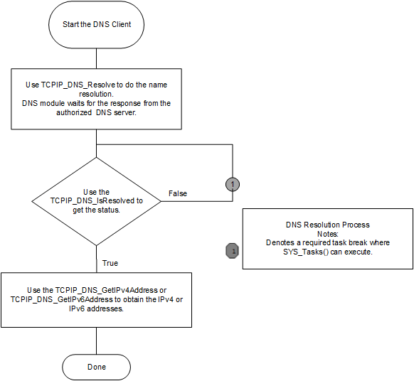

DNS is part of the Application Layer. Following is a description of how the DNS Client works and how it should be used.
- By default, the DNS client is enabled and included in the TCP/IP stackbuild.
- The DNS Client module will use a UDP socket on port number 53 to contact the DNS server.
- The DNS client can be enabled/disabled dynamically at run time.
- When the TCP/IP commands module is built in the stack, commands for manipulation of the DNS module are available:
- The DNS module can be enabled using the command "dns eth0 on".
- The DNS client module can be disabled from the command prompt using "dns eth0 off".
- In the above examples the first Ethernet interface is used. Any valid network interface can be used.
- Applications or demonstrations such as berkeley_tcp_client, berkeley_udp_client, tcpip_tcp_client, and tcpip_udp_client, use the TCPIP_DNS_Resolve function with Host name and Record type as arguments to resolve the domain host name. The DNS module supports the Record type of "A" for IPv4 addresses and "AAAA" for IPv6.
- The resolved domain name and the mapped IPv4 or IPv6 address will be stored in a table with the expiration time, which is calculated from the DNS server response.
- The server supplied IPv4 and IPv6 addresses will be cached internally (see the DNS_CLIENT_CACHE_PER_IPV4_ADDRESS and DNS_CLIENT_CACHE_PER_IPV6_ADDRESS parameters).
- The TCPIP_DNS_IsResolved function will return DNS_RES_OK if the domain name resolve is successful.
- The TCPIP_DNS_GetNumberOfIPAddresses function can be used to obtain the number of the IPv4 or IPv6 addresses present in the DNS Resolver tables.
- The DNS Resolver table (cache) stores the dcorresponding name, the IP address and the expiration time returned by the server.
- The functions, TCPIP_DNS_GetIPv4Address and TCPIP_DNS_GetIPv6Address, can be used to obtain the IPv4 or Ipv6 addresses for a resolved name entry.
